忘れられた地下墓地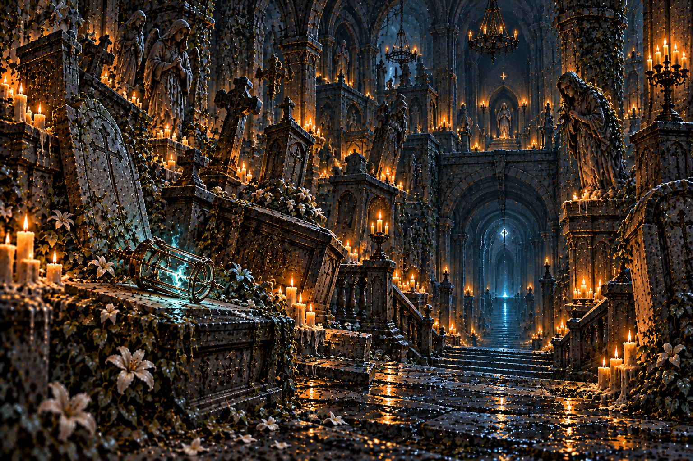第1章「師の灯」 · lore_w01 ロアダルの墓所の下。師オルドが最後に降りたと伝わるこの地下墓地は、ロアダルの人々が名を失った死者にも眠る場所を与えた墓所だった。棺の内側には、外へ向けて引っかいた跡が残る。死者は侵入者に起こされたのではない。地下から呼ぶ声に、眠りを奪われていた。今は、どの棺も下へ続く暗がりに向いている。墓地は迷宮の入口へと変わってしまった。
亡骸の囁く回廊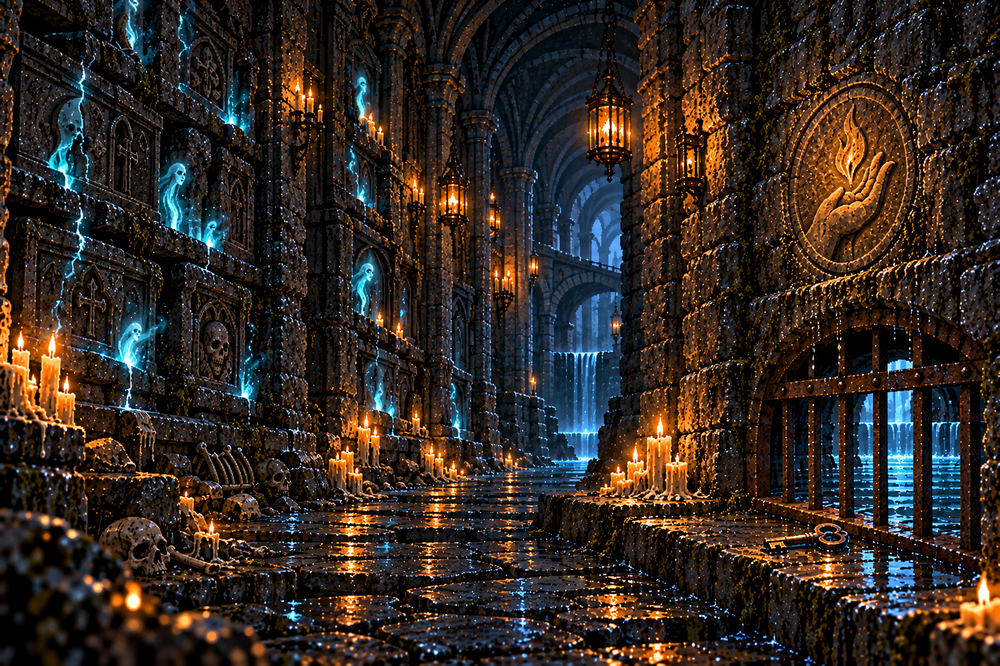第1章「師の灯」 · lore_w02 墓地の奥へ続く長い回廊。壁の向こうから死者の囁きが漏れる回廊の壁は、墓地を広げるたびに積み直された。古い棺は石壁の奥に置き去りにされたという。壁の向こうの囁きは、閉じ込められた死者の声だ。声を聞く者へ、出口の場所を尋ね続けている。奥の鉄格子は水路につながっていた。墓を守るための道と、街へ水を送る道が、地下で接していたのだ。
朽ちた骸の修道院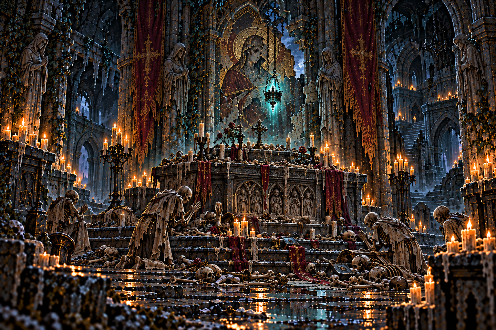第1章「師の灯」 · lore_w03 死者を弔い続けた修道士たちの成れの果て。最下階に骸の修道院長が待つ修道士たちは、埋葬しきれない死者をここで弔っていた。祈りは昼夜を問わず続いた。死者が歩き始めても、修道士たちは逃げなかった。祈りをやめれば、弔った者を見捨てることになると考えたのだ。祭壇の前に重なる骨は、最後まで祈った者たちのものだ。修道院を縛るのは信仰の深さと、祈りを終えられなかった悔いだった。
黒水の取水口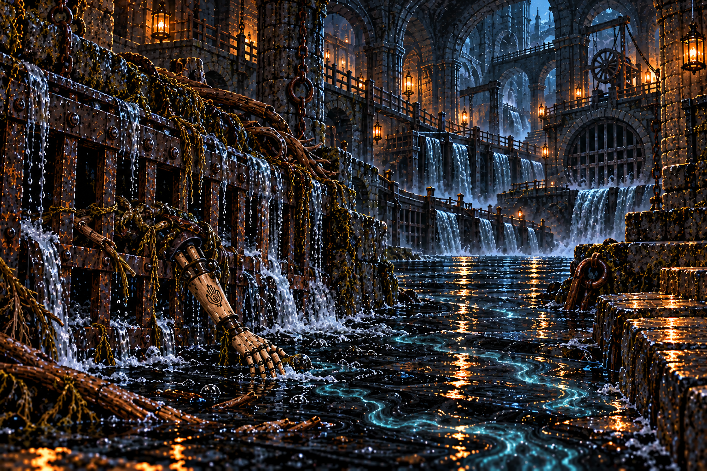第1章「師の灯」 · lore_w04 王都へ流れる黒い水の入口。水に触れた者は影が薄くなるという取水口は、ロアダルの暮らしを支えた水の入口だった。人々は水の行く先だけを知り、その来る場所を知らなかった。底の格子には木片と黒鉄の輪が引っかかっている。人業の器さえ、地下を巡る水に運ばれてくる。黒い流れは、墓所より深い場所へつながっている。取水口は、水とともに地下の秘密を街へ送り続けていた。
鎖の垂れる坑口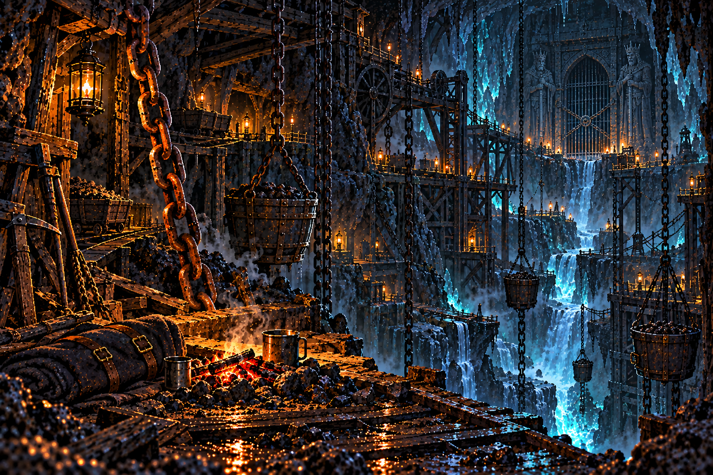第1章「師の灯」 · lore_w05 先代の王が封じた古の坑道。罪人たちの鎖が、今も闇に垂れている坑口に垂れた鎖は、鉱石の籠を吊り上げるためのものだった。作業を終えた鉱夫たちの灯が、昔は毎晩ここへ戻った。今も奥では鎖が動き、つるはしの音が響く。働く者が倒れたあとも、坑道だけが仕事を続けている。踏破した底には、水に削られた裂け目があった。鉱夫が掘った道は、彼らの知らない地下の流れへ届いていた。
亡兵の守る外郭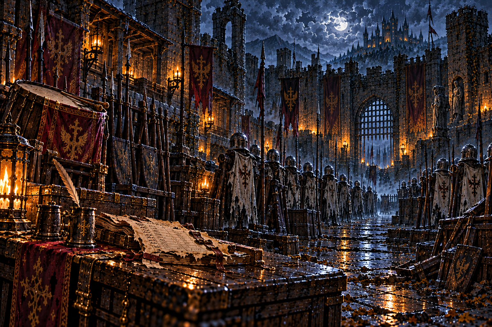第2章「捨て砦」 · lore_w06 国境の捨て砦の城壁と兵舎。百年前に死んだ守備隊が、いまも隊列を組んで持ち場を守る外郭は国境の守りの要だった。兵は持ち場を離れず、交代の合図だけを待っていた。亡兵が今も隊列を組むのは、生前の命令を覚えているからだ。最後の当直簿には、交代した者の名がない。迎えも援軍も来ないまま、守備隊は砦とともに取り残された。忠義だけが、彼らを門の前へ立たせ続けている。
捨て砦の地下牢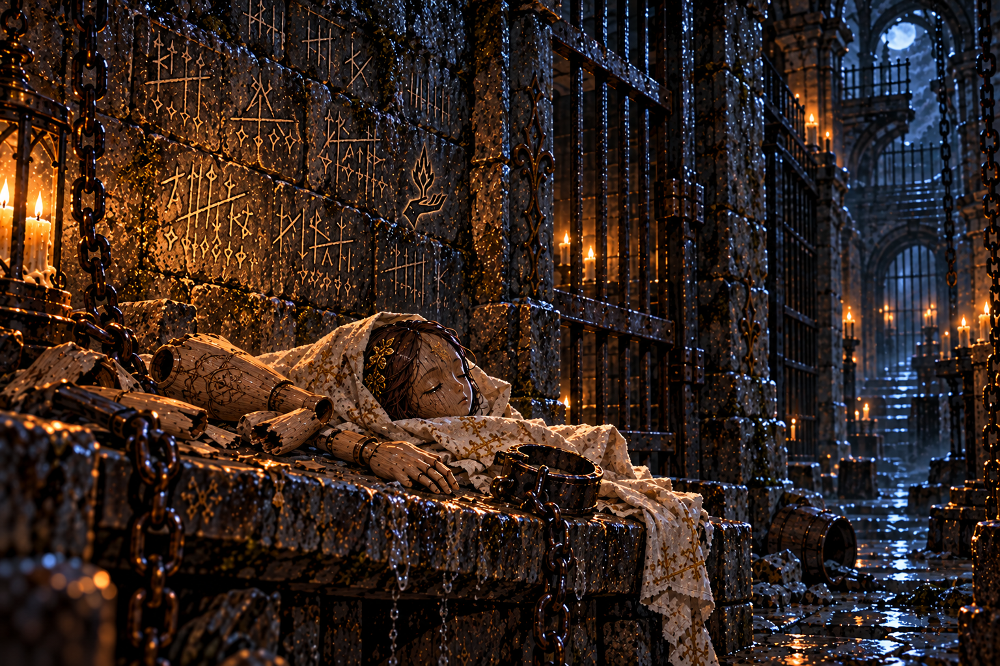第2章「捨て砦」 · lore_w07 砦の地下に掘られた牢。捕虜と罪人と、王に背いた者たちが、鍵を掛けられたまま忘れられた地下牢には敵兵だけでなく、王に仕えた操霊師の名も刻まれていた。仕える者が、なぜここへ送られたのか。壁の名は、忘れられないための最後の記録だった。閉ざされた獄は、罪を裁く場所であると同時に、人の足跡を消す場所でもあった。牢の底に残った木と鋼の欠片は、ここまで降りた人業の存在を語る。牢を出る道は、地上へだけ続いていたのではない。
雷雨の大手門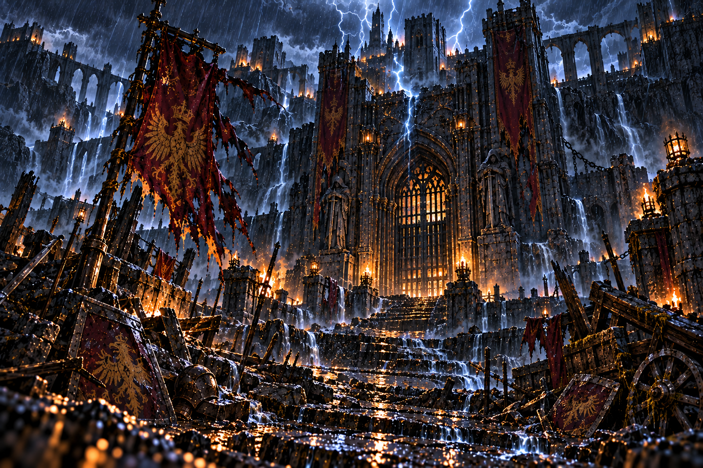第2章「捨て砦」 · lore_w08 寄せ手が最後に破った砦の正門。あの日の雷雨はいまも止まず、討ち死にした両軍の亡者が門を奪い合う大手門の軍旗は、援軍が来る方角へ掲げられていた。雨に打たれても、旗を下ろす者はいなかった。兵の魂が守るのは、砦を破ろうとする敵だけではない。門を開けば見捨てられたことを認めてしまう、その恐れも彼らを縛っていた。雷雨は途切れず、旗は焦げたまま揺れている。待ち続けた守備隊にとって、あの最後の夜は終わっていない。
捨て砦の本丸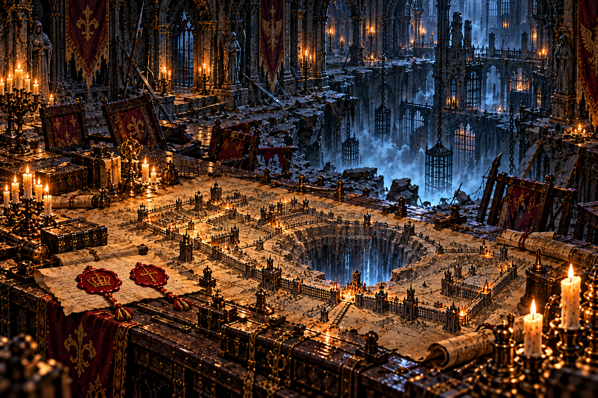第2章「捨て砦」 · lore_w09 砦の主が最後まで立てこもった本丸。軍議の間には、いまも将たちの亡霊が卓を囲む本丸は、砦を守る最後の命令が下された場所だった。軍議の卓には、外郭も地下牢も一枚の地図に描かれている。だが砦を捨てる命令は、この卓で決まったものではなかった。王家と宰相府の印を帯びた書状が、守備隊の行く末を決めていた。本丸の底の大穴は、兵たちの魂が送られた先へ開いている。砦は戦場で失われたのではなく、砦ごと捧げられたのだ。
根の這う縦穴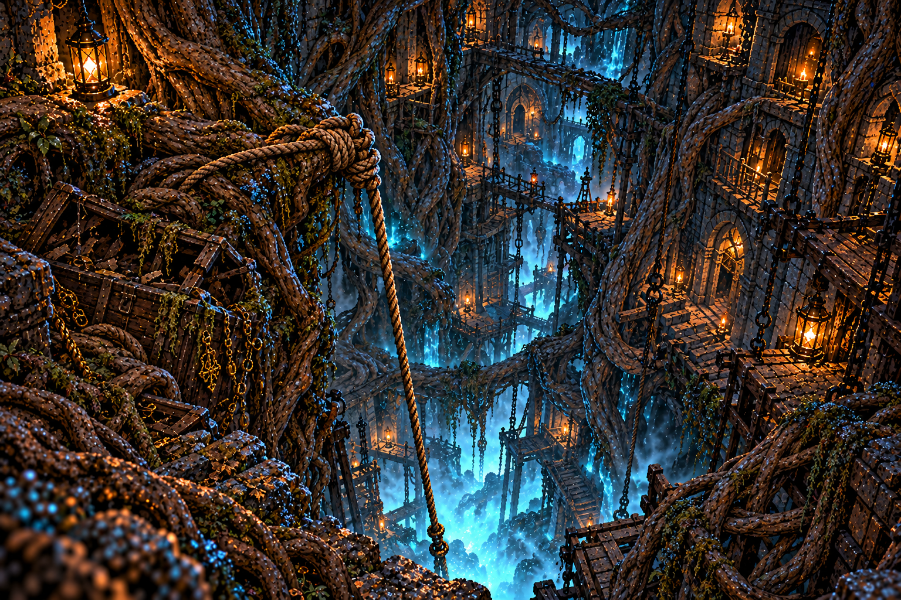第3章「魂脈の根」 · lore_w10 本丸の床に開いた大穴。壁という壁を太い根が這い、底の見えない闇へ垂れ下がっている本丸の大穴の下では、岩を割る根が壁一面を覆う。魂脈と呼ばれたものには、樹皮と樹液があった。根は上から流れ込む魂を受け取り、さらに地の底へ運んでいる。自然の穴に見えて、魂の通り道でもあった。根に結ばれた綱は、人の手によるものだ。誰かがこの流れを追い、地上へ戻る道を捨てて下へ降りた。
地の底の霧森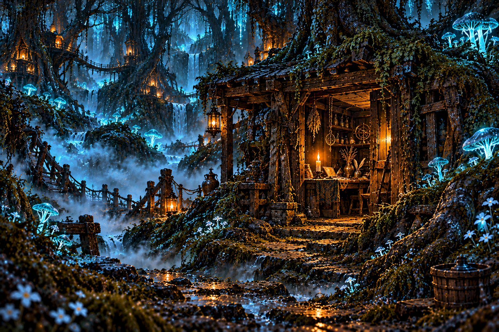第3章「魂脈の根」 · lore_w11 縦穴の底に広がる、陽の届かない森。木々は魂の灯で淡く光り、霧が階ごとに姿を変える地の底の森には、陽の光が届かない。それでも木は育ち、霧の中で死者の気配が枝を渡る。木を育てるのは水だけではない。地下へ送られた魂が、葉と幹の中に取り込まれていた。小屋の跡は、この森で人が暮らした証だ。霧は道を変えても、そこで誰かが灯を守った時間までは消せなかった。
樹液の苗床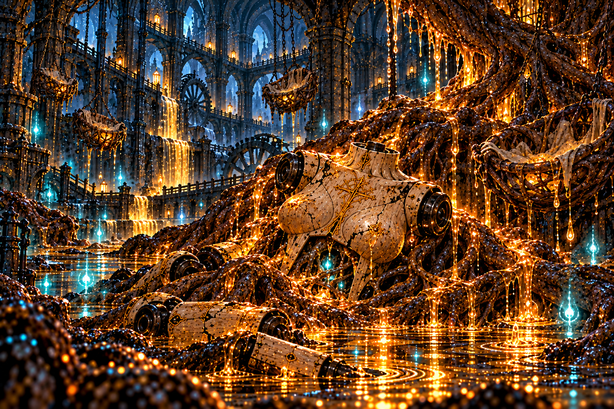第3章「魂脈の根」 · lore_w12 大樹の根が魂を溶かし、樹液に変える苗床。甘い香りが傷を癒し、魔物までも癒す苗床に満ちる樹液は、傷ついた者へ力を返す。人業も魔物も、その甘い流れに癒される。だが根の間には、器の欠片が埋まっていた。命を返すように見える場所が、別の命を取り込んでいる。苗床は森の育つ場所であり、魂の姿がほどける場所でもあった。そこに残された木の胴は、流れに呑まれた旅の証だった。
魂喰らいの大樹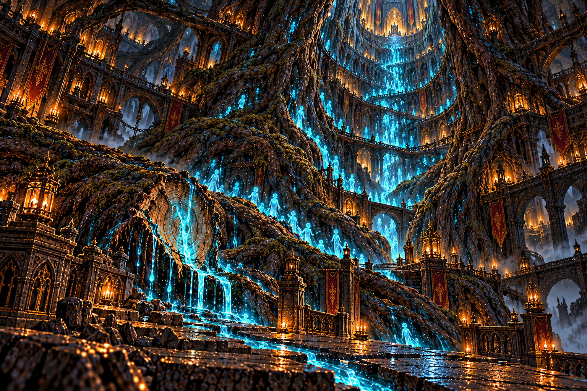第3章「魂脈の根」 · lore_w13 百の迷宮から魂を吸い上げる大樹の根元。幹は王都へ向かって、地の底を這い上がっている大樹の根は砦の下まで届き、幹はさらに上へ伸びている。魂脈は、この木のために魂を運ぶ根だった。主の記憶に残っていたのは、根を断って幹へ入ったオルドの姿と、三百年にわたり木を育ててきた宰相モルデンの名。幹の行き着く先は王都の玉座の下。地の底の森は辺境の災いではなく、王国の中心へつながっていた。
水底の参道専用画像なし第4章「王都の地下」 · lore_w14 王都の地下水路のさらに下。三百年前に沈んだ旧都の参道が、灯籠を連ねて水の底へ続いている参道は、旧都の人々が大神殿へ向かうために敷いた道だった。灯籠は祈りの数だけ並べられ、沈んだ後も水の底で列を崩さない。供物は神へ捧げられたものではなかった。泉に植えられた苗木が、それを糧に根を伸ばしていた。今も灯籠に灯がともるのは、参道を歩いた者の名残が、帰り道を探しているからなのかもしれない。
溺れた聖歌の回廊専用画像なし第4章「王都の地下」 · lore_w15 旧都の大神殿へ続く回廊。水に沈んだ聖歌隊が、三百年、同じ歌を歌い続けている回廊の聖歌隊は、都が沈む夜も歌をやめなかった。水が胸まで満ちても、最後の一節を歌い切ろうとした。壁画は、戴冠の喜びを描くために作られた。けれど絵の中の誰も、脇に立つ神官の苗木を気にかけていない。歌は三百年同じ節を繰り返している。終わりを迎えられなかった祈りが、回廊を出られずにいる。
洗礼の大水槽専用画像なし第4章「王都の地下」 · lore_w16 王が冠を受ける前に身を清めた、旧都の洗礼の水槽。いまは大樹の根が水を吸い、底は昏い大水槽は、王が冠を受ける前に身を清める場所だった。民を守るという誓いは、この水に映して立てられた。泉の苗木が根を伸ばしてから、水は少しずつ濁った。澄んだまま残る泉は、誓いの名残だけを湛えている。根は水を吸い、流れてきたものを抱え込む。底に絡まっていたのは、どこかへ帰ろうとしていた器だった。
沈める大神殿専用画像なし第4章「王都の地下」 · lore_w17 旧都の王が冠を受けた大神殿。三百年前、一夜にして水に沈んだ。大樹の幹が、祭壇を突き破って昇っている大神殿は、旧都の王たちが冠を受けた場所だった。祭壇の前には、魂の湧く泉があったという。泉に苗木が植えられた夜、床は割れ、都は水に沈んだ。王は止められなかったものを、水の底から見続けた。大樹の幹は祭壇を突き破り、今の王都の玉座へ向かって昇っている。旧い王の座の上に、新しい王の座が建てられていた。
火を噴く地割れ専用画像なし第5章「灼熱の洞」 · lore_w18 大神殿の底の割れ目から、熱い風が吹き上げる。岩は赤く脈打ち、足元から火が噴き出す地割れは、大樹の樹液を煮る熱が地の底から漏れ出した跡だった。岩は熱を帯び、脈打つように赤く光る。鉄の扉は、火の洞を外から隠すために据えられた。開ける者を拒むのではなく、中のことを知らせないための扉だった。扉をこじ開けた刃は、根を断つために研がれたものだった。断たれた根の先に、煮詰める釜があった。
灰の降る祭場専用画像なし第5章「灼熱の洞」 · lore_w19 火を拝む者たちが集った地下の祭場。天井から灰が降り続け、焼かれた人業の殻が積み上がっている祭場では、火を拝む者たちが釜の火に祈りを捧げていた。燃えるものは何でも、火への供え物になった。積まれた人業の殻は、魂を宿す前に壊れた器だった。似た顔ばかりなのは、作った者が同じ形を求め続けたからだ。灰は今も降り続ける。焼かれた器の灰が、祈る者たちの肩に積もっていく。
魂を煮る釜場専用画像なし第5章「灼熱の洞」 · lore_w20 大樹の樹液を煮詰めて霊薬に変える釜が、いくつも並ぶ。釜の火は、迷宮に呑まれた魂でできている釜場には、大樹の樹液を煮詰める釜が並ぶ。煮詰まった滴は、金の杯に受けられて王のもとへ運ばれた。釜の火を絶やさないために、迷宮に呑まれた魂がくべられた。帳面は、その数を三百年書き留めてきた。魂を使わない薬の作り方は、釜の前で見つけられた。同じ火の前で、別の作り方を考えた人がいたのだ。
業火の大釜専用画像なし第5章「灼熱の洞」 · lore_w21 火の洞の底の大釜。三百年、魂の樹液を煮詰め続けてきた。釜の底には、底の無い穴が口を開けている大釜は、火の洞のいちばん底に据えられていた。樹液はここで最後に煮詰められ、王の霊薬になる。釜の下には、底の見えない穴がある。魂の流れはその奥から湧き、またその奥へ落ちていく。火の洞の者たちは、その穴を奈落と呼んだ。大釜は、奈落の口に蓋をするように置かれていた。
奈落の氷棚専用画像なし第6章「氷結回廊」 · lore_w22 大釜の底の穴を降りると、壁から氷の棚が張り出している。吹き上げる風が、落ちてくる魂を凍らせて受け止める奈落の壁には、吹き上げる風で凍った氷の棚が、螺旋を描いて張り出している。風は落ちてくるものを壁へ吹き寄せ、氷が受け止める。棚に凍りついた品々は、落ちていった者たちの持ち物だ。風に削られた棚は穴だらけで、受け止められたものも、いつかまた下へこぼれていく。
凍れる操霊師の間専用画像なし第6章「氷結回廊」 · lore_w23 氷の柱がどこまでも並ぶ広間。柱の一本一本に、人の影が閉じこめられている広間の氷の柱には、それぞれ人がひとりずつ閉じこめられていた。どの顔も、眠るように目を閉じている。柱の根元に刻まれた名は、王家の記録からは消された名だった。処刑されたはずの者たちが、氷の中で百年を過ごしていた。凍りきれずに柱からこぼれた者は、半ば凍ったまま広間を歩く。眠りたくても眠れないのは、氷が浅かったからだ。
極光の氷窟専用画像なし第6章「氷結回廊」 · lore_w24 天井に極光がゆらめく氷の洞窟。光の正体は、氷に閉じこめられた無数の魂だという氷窟の天井の極光は、空の光ではない。氷に閉じこめられた無数の魂が、ゆっくりと瞬いている。光の加減で、魔物の気配まで揺らぐ。この洞窟では、確かなものなど何ひとつない。氷の中には、古い金貨も光っていた。魂と一緒に落ちてきた、誰かの暮らしの名残だ。
凍てつく大回廊専用画像なし第6章「氷結回廊」 · lore_w25 奈落の壁をめぐる、氷の大回廊。いちばん奥に、氷の玉座があるという大回廊は、奈落の壁をめぐる氷の道だった。奥へ進むほど冷気は深く、足が言うことを聞かなくなる。回廊の奥の玉座には、三百年、ひとりの操霊師が座っていた。落ちていく魂を止めるために、自分ごと氷になって。堰が解けた今、氷の水はさらに下へと流れ落ちている。回廊は、もう何も受け止めない。
沈んだ礼拝堂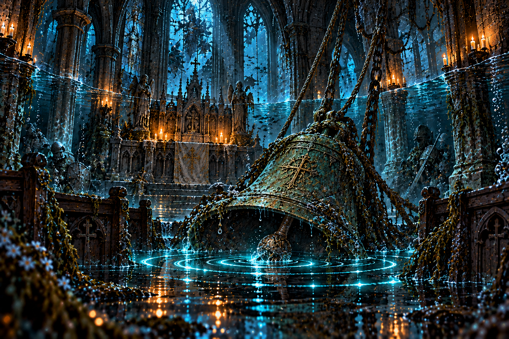寄り道の物語 · lore_ws1 黒い水の底に沈んだ礼拝堂。夜ごと、水の下から鐘が鳴る礼拝堂は、水辺の人々が死者を弔う小さな祈りの場だった。水が床を覆っても、鐘の綱は切られなかった。夜ごと聞こえる鐘は、底に沈んだ魂が地上へ居場所を知らせる音だ。祈りの場が失われても、弔いを求める声は残った。鐘の周りに集まる魔物は、音に寄せられたものだった。黒い水の下には、忘れられた祈りがまだ響いている。
石眠りの石切り場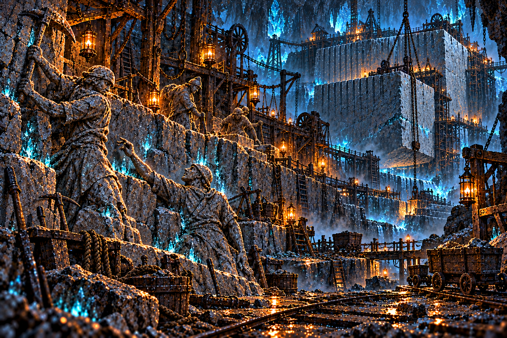寄り道の物語 · lore_ws2 王都の城壁を切り出した古い石切り場。鉱夫たちは、つるはしを握ったまま石になった王都の城壁の石は、この石切り場から運ばれた。鉱夫たちは、誰かを守る壁を作るために岩を切った。石になった者の手には、今もつるはしが握られている。仲間を置いて逃げることができず、作業場に残った者たちだ。足元の石には、運び出されなかった切り込みが残る。王都を守る仕事の裏に、名も知られない鉱夫たちの眠りがあった。
霧の迷い森専用画像なし寄り道の物語 · lore_ws3 捨て砦の裏手に広がる森。霧が道を食い、胞子が足を取る。迷い込んだ者は二度と同じ道を歩けない迷い森の霧は、歩いた道を隠し、覚えていた景色を入れ替える。木につけた印さえ、戻る目印にはならない。奥の泉の周りだけには、人が行き来した跡が残っていた。森へ迷い込んだ者たちは、水辺で互いを待っていた。帰れなかった者の気配が、新たな旅人を引き止める。霧の恐ろしさには、ひとりで残された者の寂しさも混ざっていた。
銀業の隠れ里専用画像なし寄り道の物語 · lore_ws4 器になりそこねた魂が流れ着く、霧の奥の隠れ里。空の鎧と石の人形が、銀の小人を守っている霧の奥の里には、人業の器になれなかった魂が流れ着く。銀の小人たちは、街に住む場所を持たない。空の鎧と石の人形は、彼らを狩る者ではなく守る者だった。器を得られなかった魂どうしが、小さな暮らしを支えていた。銀の里は宝の山である前に、帰る場所のない魂の隠れ家だった。金属の輝きの奥に、もう一つの生き方が残っている。
王都の古井戸専用画像なし寄り道の物語 · lore_ws5 軍議の卓の地図に、王都の真ん中でひとつだけ赤く囲まれていた井戸。投げ込まれた願いの品が、底に積もっている古井戸は、王都の人々が願い事と一緒に金貨を投げ入れる場所だった。三百年分の願いが、底に積もっている。願いは叶わないまま沈み、それを喰らって育つものがいた。井戸の水もまた、大樹の根へつながっていた。軍議の卓の地図がこの井戸を赤く囲んでいたのは、王都でいちばん根に近い場所だったからだ。